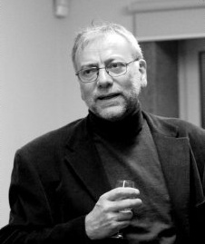

<div class="curriculum-text">
	<h1>Hélder de Carvalho</h1>
	<p>Hélder José Teixeira de Carvalho was born in Carrazeda de Ansiães (Trás-os-Montes).</p>
	<p>He graduated in Fine Arts from Faculdade de Belas Artes do Porto.</p>
	<p>Pursues his artistic activity with predominance in the field of sculpture.</p>
	<p>He participated in several solo and group exhibitions. Among them:</p>
	<ul>
		<li>Biennial of Art V.N. Cerveira (1982 and 1984);</li>
		<li>National Exhibition of Outdoor Sculpture - Ministry of Culture, Oporto;</li>
		<li>Biennial Sculpture and Drawing Amadora (1988 and 1990);</li>
		<li>Biennial of Sculpture and Design of Caldas da Rainha (1987 and 1989);</li>
		<li>Solo Exhibition of Sculpture at the Fundação António de Almeida (1997), Oporto;</li>
		<li>Solo Exhibition of Sculpture at the Cooperative "Árvore" (1995), in Porto.</li>
	</ul>
	<p>Concurrent to his art production, he has worked as a teacher of visual arts and completed a masters course in "Art Craft and Design" from the University of Roehampton, London in 2005.</p>
</div>